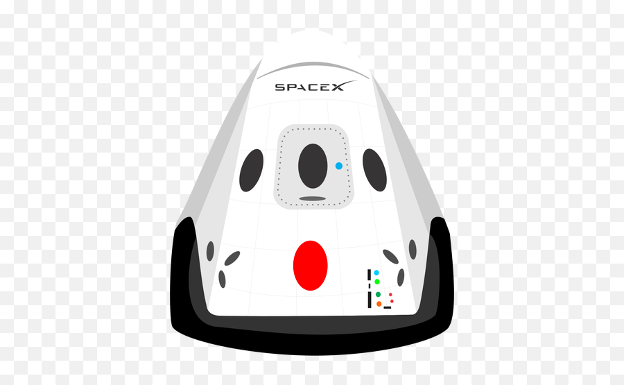

Hyperblog
Tu blog de cabecera
Aquí inicia la historia de una gran proyecto
Y este es el párrafo de inicio dónde vamos a explicar las cosas increíbles que se pueden hacer con ramas.

Los blogs son la mejor forma de compartir información y tus ideas. Mucho más que ir a conferencias o salir en Youtube. Excepto si eres un rockstar. Pero estadísticamente no lo eres, por ahora...
Suscríbete y dale like.